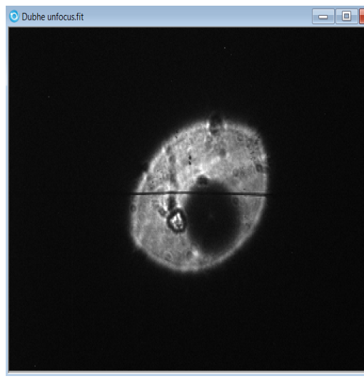
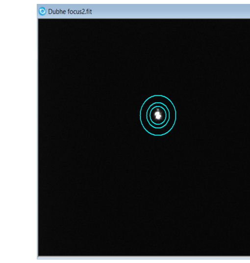
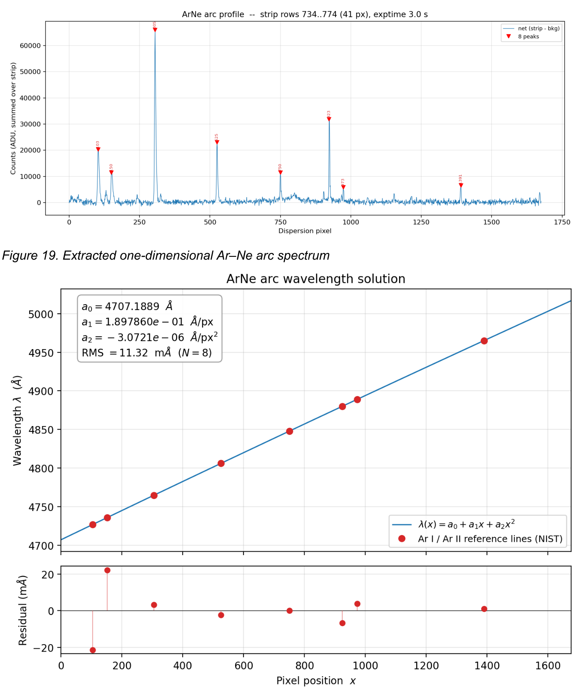
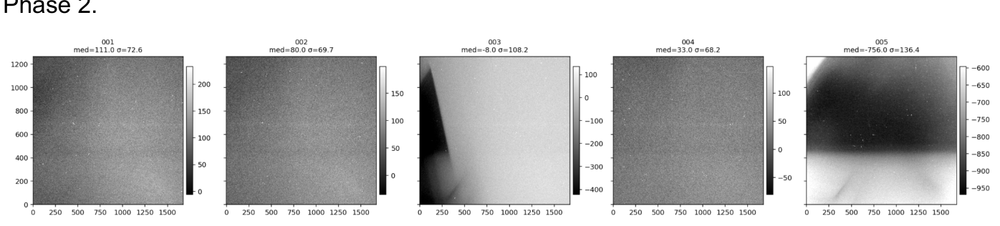
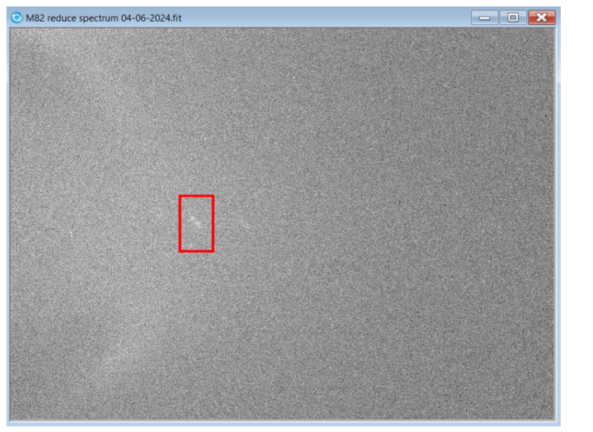
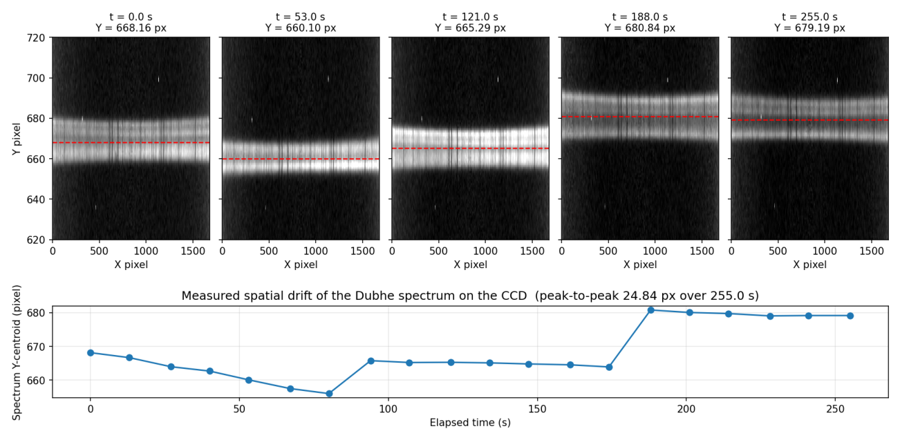
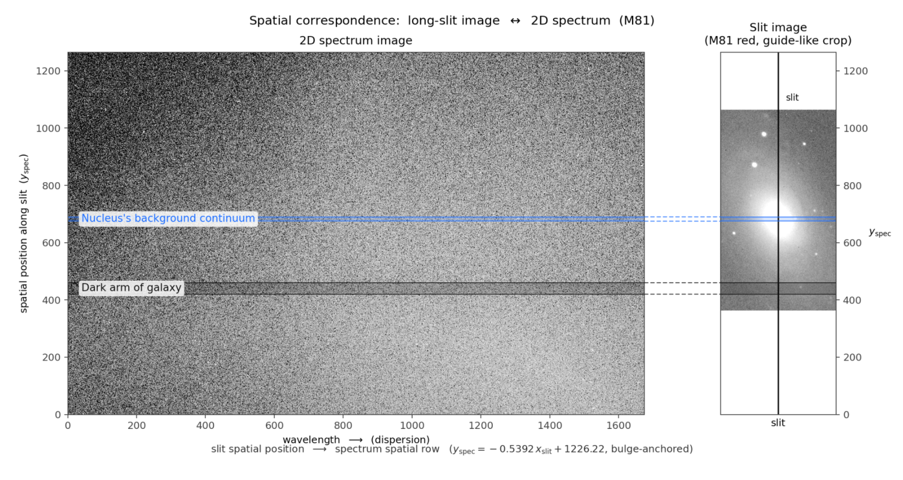

Practical Guide to LHIRES III Spectroscopy
A field manual written by students, for students. The goal is simple: the next person who uses this setup should not repeat the same wavelength-range, lamp-identification, and raw-frame-inspection mistakes that earlier projects ran into.
Play with the interactive simulator before touching the real instrument.
The grating angle does not tell you the wavelength.
One project lost a season of data to an unverified spectral window.
Jump to the quick-start ordered checklist.
1. Setup Overview
The instrument chain at NTU Observatory consists of the following components, in the order light travels:
2. Interactive Simulator
Before touching the real instrument, get a feel for how light moves through it. The 3D model below mirrors the LHIRES III optical path — slit, collimator, rotating grating, camera lens, CCD plane. Change the grating density or the micrometer angle and watch where the dispersed spectrum lands on the detector. Two readouts on the simulator make the geometry explicit: the CCD Wavelength Window panel (bottom-left) shows the live λ range falling on the detector, and the What the CCD sees strip (bottom-right) renders the same spectrum the way a real frame would capture it, with Hα, Hβ, Na-D and lamp lines marked when they fall inside the window.
- Click the Hα preset, then drag the micrometer a few degrees. Watch Hα walk across the “What the CCD sees” strip — and when it falls off the edge, watch the red off-detector warning appear. This is exactly the failure mode behind the case study in §7.
- With Hα selected, switch between 150 l/mm and 2400 l/mm. The CCD Wavelength Window panel will show how the λ span collapses from thousands of Ångströms to a few hundred — that is the resolution/coverage tradeoff in one screen.
- Try the Ar 7635 preset at 2400 l/mm: a small micrometer change is enough to push the lamp line off the strip even though the 3D rays still look fine. The grating angle alone does not tell you the wavelength (see §4 and §5).
- Compare the spectral strip against the lamp-line markers (Hα, Hβ, Na-D, Hg, He I, Ar I). On a real frame these are the patterns you use to verify the wavelength solution — the simulator gives you the “answer key” to build that pattern recognition before the telescope.
3. Before Observing Checklist
Run through this every night, in order. Print it out if needed. Skipping items is the single biggest cause of unusable data.
4. How to Tune the Spectrograph
“Do not assume the grating angle corresponds to the intended wavelength region. Always verify the spectral window using an Ar–Ne calibration frame before interpreting science data.”
The LHIRES III uses a rotating grating to select which wavelength range falls on the CCD. The micrometer reading is a guide, not a measurement. Mechanical backlash, hysteresis, the choice of grating (e.g. 600 vs 2400 l/mm), and detector centering all shift the actual window relative to the nominal one.
Procedure
- Set the grating angle to the nominal value for your target line (e.g. Hα 6563 Å). Approach the angle from the same direction every time to reduce backlash.
- Take an Ar–Ne lamp frame immediately, without moving the grating.
- Identify at least two lamp lines on the frame using a reference atlas. Two lines anchor a rough dispersion solution.
- Compute the wavelength range covered by the CCD from those two lines. Compare to what you expected.
- If the range is wrong, adjust the grating in small steps and repeat. Do not skip ahead to science exposures until the window is confirmed.
- Record the final micrometer reading, the lamp frame filename, and the identified lines. This becomes the wavelength reference for the night.
What good and bad focus look like
Focus the spectrograph slit camera on a bright reference star next to the target (Dubhe, magnitude 1.95, was used here). Iterate primary-mirror screw, then the remote fine-focus, until the FWHM is as small as you can make it.


5. Wavelength Calibration Guide
- Take an Ar–Ne lamp frame at the same grating position as the science frames.
- Extract a 1D lamp spectrum along the dispersion axis.
- Identify known lamp lines using a reference atlas (start with the brightest, most isolated lines).
- Fit pixel position vs. wavelength — usually a low-order polynomial (2nd or 3rd) is enough.
- Check the residuals: they should be sub-Angstrom and structureless. Systematic curvature means the order is wrong or you have misidentified a line.
- Confirm that your expected science line (Hα, Hβ, etc.) falls inside the calibrated range.
- If observing a galaxy or other Doppler-shifted source, apply the known redshift/blueshift and confirm the line still falls inside the frame.
Wavelength atlas — which lines you should see at each screw setting
Picking a screw setting is the same thing as picking a 281 Å slice of the spectrum to land on the CCD. The atlas below collapses all 20 PURS-2025 calibration panels into one wavelength axis: the upper ticks are the brightest Ne (yellow) and Ar (blue) emission lines, and each colored band underneath is the CCD window for a representative micrometer setting. Read it left-to-right and you can answer “at X mm, what should the lamp look like?” in one glance.
How to identify lamp lines without fooling yourself
- Match the pattern of strong and weak lines, not just one bright line.
- Cross-check with a published Ar–Ne atlas at your spectrograph's resolution.
- If two solutions seem plausible, take a second lamp frame at a slightly different grating angle and confirm the lines shift in the predicted direction.
- Have a second person independently identify the lines and compare results.
What a correctly identified Ar–Ne calibration looks like — vs. one that isn't


6. Data Reduction Workflow
The standard reduction path for LHIRES III science data:
What a stable spectral trace looks like — vs. a drifted one


Slit camera and 2D spectrum — what they look like together

7. Case Study: What Went Wrong in This Project
This section is included not to embarrass anyone, but because it is one of the most valuable teaching cases this instrument has produced. Treat it as part of the documentation.
- Verify the spectral window with an identified lamp frame before taking science exposures, not after.
- Inspect raw 2D frames the same night they are taken. Do not defer to “later in the analysis.”
- Document grating angles, lamp identifications, and decisions in a logbook the same night. Memory is not a calibration source.
- A null result with a verified setup is publishable. A null result with an unverified setup is just a question mark.
8. Student Quick-Start
First night with LHIRES III: what to do, in order.
- Take dark frames matched to your planned science exposure time. NTU's procedure uses darks only — no bias frames, because exposures are always matched.
- Set the spectrograph grating angle to the nominal value for your target line.
- Take an Ar–Ne lamp frame. Without moving the grating.
- Confirm the wavelength range by identifying lamp lines. Do not proceed until this is done.
- Point the telescope at the target.
- Check that the target is on the slit using the slit/guiding camera.
- Start PHD2 autoguiding and confirm stable tracking.
- Take a short test exposure (e.g. 60–120 s).
- Inspect the trace on the test frame: present, well-centred, not saturated, no obvious cosmic ray pile-up.
- Take the long science exposures.
- Take a closing lamp frame after each science set, to track flexure.
- Take flats using the spectrograph's flat-field unit (from the upgrade kit) at the end of the night.
9. Troubleshooting
No trace visible on the science frame
- Is the target actually on the slit? Check the slit camera.
- Is the exposure long enough for the target's brightness?
- Is focus correct on the spectrograph collimator?
- Has the slit width been set correctly (not closed too narrow)?
Guide camera not reliable
- Is the guide star bright enough? Try a longer guide exposure.
- Is PHD2 calibrated for the current pier side?
- Cable snag or dew on the pickoff mirror?
Lamp lines not matching the atlas
- You are probably looking at the wrong region of the spectrum — this is the dangerous case.
- Re-identify by pattern, not by single lines.
- Move the grating slightly and confirm lines shift in the expected direction.
Cosmic rays everywhere
- Take multiple shorter exposures and combine, instead of one long one.
- Use L.A.Cosmic or equivalent during reduction.
- Check CCD temperature is stable.
Saturated lamp frame
- Reduce lamp exposure time.
- Saturated lines bleed and shift centroids — do not use them for the wavelength fit.
Wrong wavelength range
- See §4 and §5. Re-tune and re-verify with a fresh lamp frame.
- Do not try to “rescue” data taken before the range was confirmed unless you can prove the window from a contemporaneous lamp frame.
Weak continuum
- Check focus and slit alignment first.
- Check transparency / cloud.
- Stack multiple exposures rather than pushing a single exposure to saturation in the bright sky lines.
Target not centred on the slit
- Re-centre using the slit camera before resuming.
- Check telescope pointing model; do a fresh sync on a nearby bright star.
- Check for differential flexure between guide path and science path.